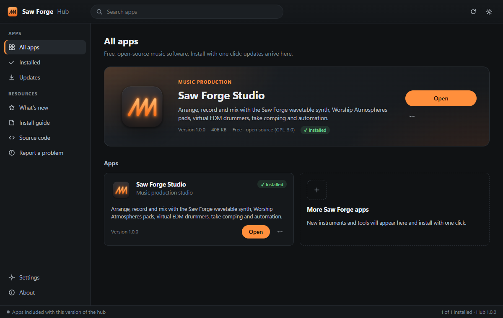
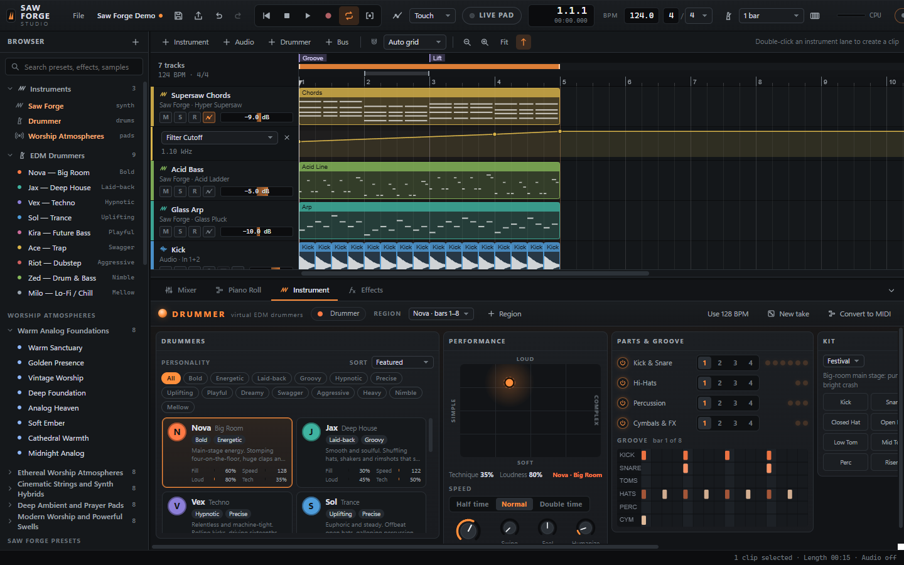

Make music with free, open-source tools.
Saw Forge Hub installs and updates the Saw Forge apps on your computer. It starts with Saw Forge Studio, a complete music studio with synths, worship pads, virtual EDM drummers, recording and mixing.

Saw Forge Studio
Arrange, play, record and mix in one window, on the same audio engine as the browser version, now as a desktop app.
- Saw Forge synth. A wavetable analog synth with a supersaw engine, filters, effects and presets.
- Worship Atmospheres. Sustaining pads, string layers, and Live Pad Mode with setlists for services.
- Drummer. Nine virtual EDM drummers you choose by personality, then shape their fills, speed, loudness and technique.
- Recording. Audio and MIDI, punch in/out, take lanes and comping.
- Mixing. Buses, sends, inserts, automation lanes and WAV export.

Install in three steps
The hub works like other app managers: install it once, then add apps with one click.
Download the hub
Get the installer for your computer above. It's free, with no sign-up.
Run the installer
On Windows a setup wizard walks you through it. On a Mac, drag Saw Forge Hub into Applications.
Install an app
In the hub, click Install next to Saw Forge Studio, then Open. Updates show up in the hub.
Is it safe to install?
Saw Forge is open source, so you don't have to take our word for it. Here's what you can check yourself.
Built from public source
Every release is built by GitHub Actions from the code in the public repository, and the build logs are public too. App packages are reproducible: building the same source always gives the same checksum.
Code signing In progress
Early releases aren't code-signed yet, so Windows and macOS show a one-time warning before the first launch. The install guide shows exactly what you'll see and how to continue.
Verify your download
Compare your file's SHA-256 with the published one. They should match exactly.
All checksums: SHA256SUMS.txt
What it does on your computer
- Installs to your user folder; no admin rights needed on Windows.
- Saves projects in
Documents/Saw Forge. - Connects to the internet only to check GitHub for updates, which you can turn off in Settings.
- Uses the microphone only while you record.
System requirements
Windows
- System
- Windows 10 or 11, 64-bit
- Memory
- 4 GB (8 GB recommended)
- Disk
- About 400 MB
- Audio
- Any output device; an audio interface is optional
- MIDI
- Optional USB MIDI keyboard
macOS
- System
- macOS 12 Monterey or later
- Processor
- Apple Silicon or Intel (one universal app)
- Memory
- 4 GB (8 GB recommended)
- Disk
- About 450 MB
- MIDI
- Optional USB or Bluetooth MIDI keyboard
Questions
Is it really free?
Yes. Saw Forge is free software under the GNU General Public License v3, with no trial, ads or account. You may share it, change it and redistribute it under the same license.
Where are my projects saved?
In Documents/Saw Forge/Saw Forge Studio: projects in saves, the ten previous versions of each in saves/.history, autosaves in saves/.autosave, and WAV exports in exports. Updating or uninstalling never touches them.
Does it need the internet?
Only to download the hub and apps, and to check for updates. Making music works fully offline.
How do I uninstall?
Uninstall single apps from the hub. To remove everything on Windows, go to Settings → Apps → Installed apps → Saw Forge Hub → Uninstall. On macOS, quit the hub and drag it from Applications to the Trash. Your projects are kept either way.
Can I build it myself?
Yes. Clone the repository, then run npm ci and npm run dist:win (or dist:mac) in the desktop folder. App packages are reproducible, so your checksums will match the published ones.
Can I still use it in a browser?
Yes. Saw Forge Studio is a web app at heart: run python serve.py in the repository and open http://127.0.0.1:8765 in Chrome or Edge.